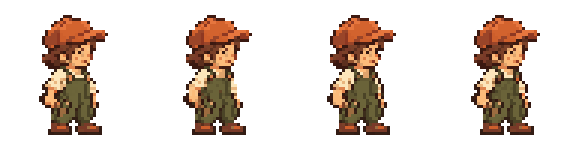
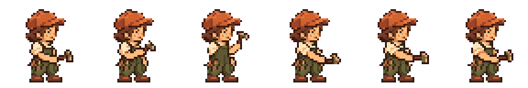

Mina Idle·Work 스타일 테스트
승인된 48×48 중립 프레임 · 공통 32색 · 발 접점 고정 · Idle 4프레임 2 FPS / Work 6프레임 6 FPS
애니메이션과 배경의 아트 검토용 페이지입니다. Companion은 현재 장면의 기하학적 배경·좌표를 참조합니다. Ghost는 밝고 어두운 단색 배경 예시입니다. Godot 실행·실제 Windows 창·입력 검증 결과가 아닙니다.
전체 프레임 · 3× 최근접 확대
Idle

Work

검토 항목
- 모자·얼굴·발이 흔들리지 않고 승인된 Mina로 읽히는가?
- Idle의 작은 호흡과 눈깜빡임이 차분한가?
- Work의 들어 올림·접촉·복귀가 읽히고 마지막 프레임에서 첫 프레임으로 자연스럽게 돌아가는가?
- Ghost 40%에서도 밝고 어두운 배경에 묻히지 않는가?
현재 Companion 좌표에서 Work 프레임 4의 도구 오른쪽 끝과 작업대 왼쪽 사이에 5px 간격이 있습니다. 발 마지막 행 y=147과 바닥 시작 y=154 사이에도 6개의 빈 행이 남습니다. 실행 장면의 노드 배치는 변경하지 않았습니다. 동작 스타일 검토와 별도로 후속 배치 검토가 필요합니다. 원본 AI 격자의 색 흔들림을 줄이기 위해 승인된 머리·하체를 고정했습니다. 동작과 루프 품질은 사용자 검토를 기다립니다.
생성 기록·변환 방법 · 검사 결과 · 승인된 중립 프레임
Idle 192×48 PNG · Work 288×48 PNG